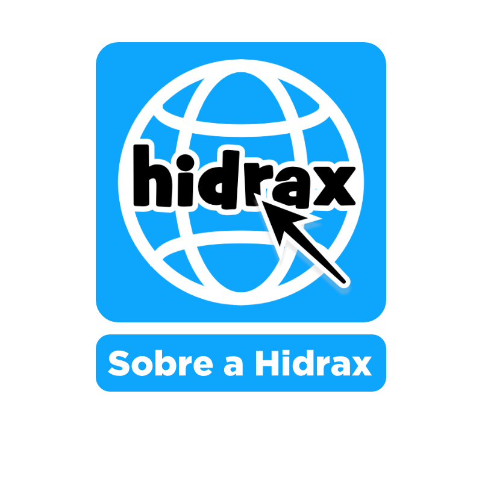

A missão da Hidrax - Code é fornecer soluções para empresas de e-commerce e Internet. O nosso
principal cliente é a Loja ToperGuia. Fundada em 2022 pelo Senhor Jeozadeque(Casado com a Senhorita
Raquel), na cidade Parnamirim-RN, atualmente contamos com 4 funcionários.
Nosso foco é:
A ToperGuia, uma empresa filantropa, é nossa parceira e disponibiliza uma biblioteca pública nas princípais capitais do Brasil, com a intenção de aumentar o conhecimento de toda a população.